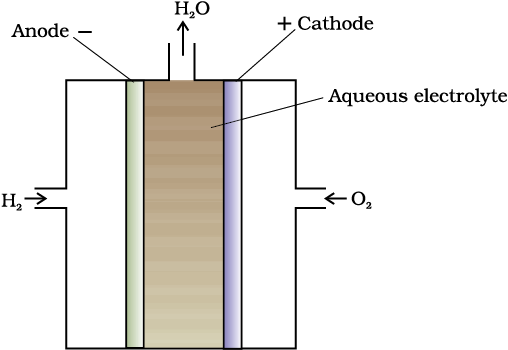

Production of electricity by thermal plants is not a very efficient method and is a major source of pollution. In such plants, the chemical energy (heat of combustion) of fossil fuels (coal, gas or oil) is first used for converting water into high pressure steam. This is then used to run a turbine to produce electricity. We know that a galvanic cell directly converts chemical energy into electricity and is highly efficient. It is now possible to make such cells in which reactants are fed continuously to the electrodes and products are removed continuously from the electrolyte compartment. Galvanic cells that are designed to convert the energy of combustion of fuels like hydrogen, methane, methanol, etc. directly into electrical energy are called fuel cells.
One of the most successful fuel cells uses the reaction of hydrogen with oxygen to form water (Fig. 3.12). The cell was used for providing electrical power in the Apollo space programme. The water vapours produced during the reaction were condensed and added to the drinking water supply for the astronauts. In the cell, hydrogen and oxygen are bubbled through porous carbon electrodes into concentrated aqueous sodium hydroxide solution. Catalysts like finely divided platinum or palladium metal are incorporated into the electrodes for increasing the rate of electrode reactions. The electrode reactions are given below:
Cathode: O2(g) + 2H2O(l) + 4e–→ 4OH–(aq)
Anode: 2H2 (g) + 4OH–(aq) → 4H2O(l) + 4e–
Overall reaction being:
2H2(g) + O2(g) → 2 H2O(l)
The cell runs continuously as long as the reactants are supplied. Fuel cells produce electricity with an efficiency of about 70 % compared to thermal plants whose efficiency is about 40%. There has been tremendous progress in the development of new electrode materials, better catalysts and electrolytes for increasing the efficiency of fuel cells. These have been used in automobiles on an experimental basis. Fuel cells are pollution free and in view of their future importance, a variety of fuel cells have been fabricated and tried.